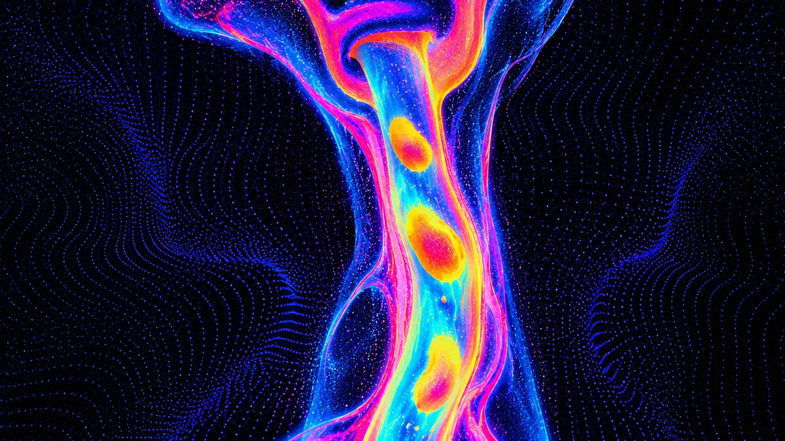
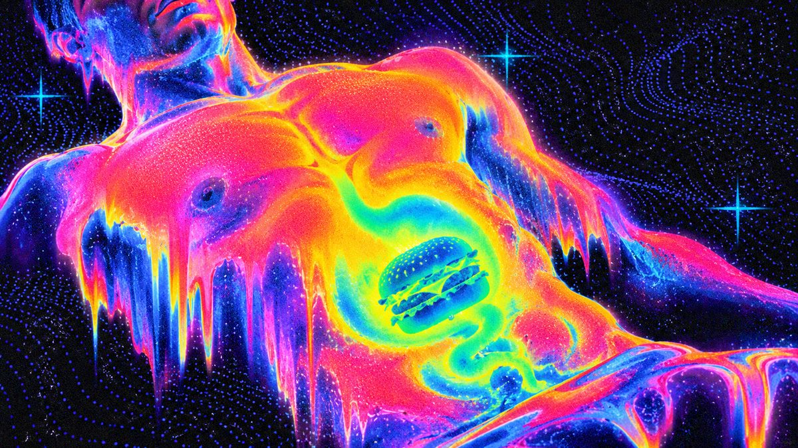

01 · 收集食物聲音
00:00.0
麥克風尚未啟動
對著麥克風發出食物的聲音 —— 咬碎、油炸、吸湯、咀嚼或摩擦。系統會判斷聲音質地，找出最接近的台灣小吃。
咀嚼酥脆油炸湯汁摩擦


分析聲音質地
LIVE BODY SCAN / AUDIO REACTIVE食道傳輸中
02 · 食物特徵
尚未偵測到食物。
錄一段聲音後，這裡會顯示它的特徵。
錄一段聲音後，這裡會顯示它的特徵。
聲音型態
收集的樣本
錄音結束後，偵測到的聲音型態會在上方亮起，並從該型的食物中給出結果。